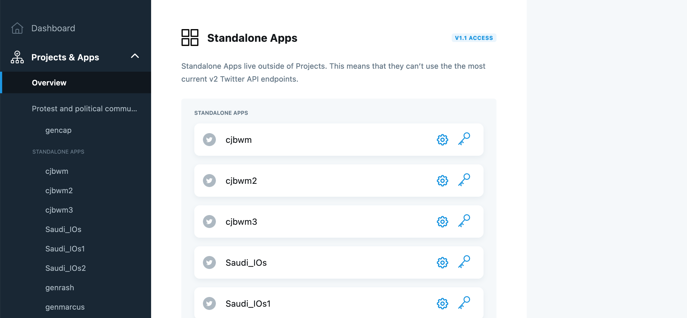
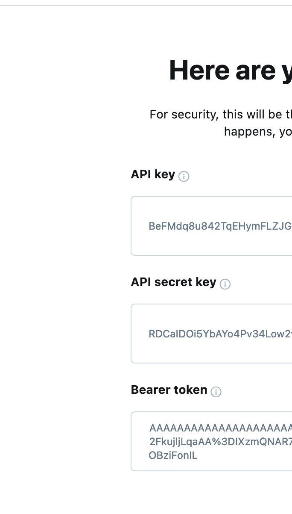
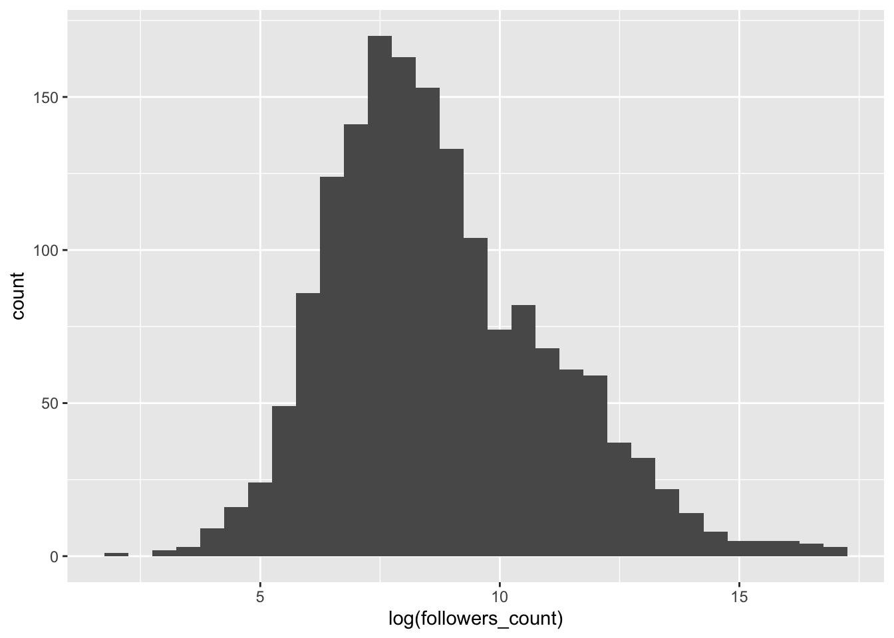

library(tidyverse) # loads dplyr, ggplot2, and others
library(rtweet) # to query the Twitter API in RWarning: package 'rtweet' was built under R version 4.1.3In what follows, we’ll go through some examples of how to collect data from Twitter. Twitter has a number of access points (APIs) and the amount and variety of data you can access depends on your permissions. These are explained below.
Often, articles using Twitter data share the replication materials as tweet “IDs”. This is because the Terms of Service for the Twitter API dictate that, for reproduction purposes, it is not permitted to share the raw contents of tweets. Instead, we have to “rehydrate” these tweets. An example of this from Barrie and Frey (2021) is provided below.
To practice these skills, you might want to create a new Twitter account for your academic research. But you needn’t create a new account to follow the steps below. You can simply use your own Twitter account—if you have one—as using the developer tools will not change anything about your public Twitter account.

Before proceeding, we’ll load the remaining packages we will need for this tutorial.
library(tidyverse) # loads dplyr, ggplot2, and others
library(rtweet) # to query the Twitter API in RWarning: package 'rtweet' was built under R version 4.1.3Once you’ve create your new account, or have logged into your existing one, go to the Twitter developer portal log in page here.
Click on Apply in the navigation bar on the top right of the page. You’ll be asked “what best describes you?” For the purposes of this tutorial, select academic, and then select student. Fill in all the relevant information and submit your application. Your application will then be reviewed by Twitter before access is granted. This might take hours or days.
Once you have authorization, a new tab will appear in the navigation bar at the top of the develop portal, as below:

Navigate to the developer portal and you will there be able to create a new “app” to query the API. You see in my account that I have several apps for different purposes.
 We can create a new app on this page too. When we click “Create App” we will first be asked to name the app. Most importantly, we will then be given an “API key”; an “API secret key”; and a “Bearer token” as below.

You MUST make a record of these. Once you have done so, you can then use these to access the API. Once you have recorded these, navigate to the App setting tabs for the App you’ve created now listed in the Overview tab on the left hand side navigation window.

Navigate to “Keys and tokens” on this page, and click generate in the Access token & secret box as below:

Record these as well. Once you have all of these keys and tokens recorded somewhere safe, you are ready to collect data!
This is pretty simple using the rtweet package. Below, we’ll collect the last 50 tweets of the founder of Twitter: Jack Dorsey.
api_key <-" XXXXXXXXXXXXXXXXXXXXXXX"
api_key_secret <- "XXXXXXXXXXXXXXXXXXXXXXXXXXXXXXXXXXXXXXXXXXXXXXXXXX"
access_token <- "XXXXXXXXXXXXXXXXXXXXXXXXXXXXXXXXXXXXXXXXXXXXXXXXXX"
access_token_secret <- "XXXXXXXXXXXXXXXXXXXXXXXXXXXXXXXXXXXXXXXXXXXXXX"
token <- create_token(
app = "NAME YOUR APP",
consumer_key = api_key,
consumer_secret = api_key_secret,
access_token = access_token,
access_secret = access_token_secret
)
user <- "@jack"
jacktweets <- get_timeline(user, n = 50)
head(jacktweets)Once you have enter your keys, tokens, and key/token secrets, store them with the create_token() function. Here, we are collecting the last 50 tweets for Jack Dorsey, though you can change this by specifying a higher n—be aware, though, that the maximum you are able to collect with the basic API access is 3200 tweets.
| created_at | screen_name | text |
|---|---|---|
| 2021-02-25 23:36:34 | jack | Bitcoin, Blockchain and the Black Community - CoinDesk https://t.co/3KH6W7Rg0Q |
| 2021-02-25 23:32:42 | jack | Starting in less than an hour! üëáüèæ Tune into @CoinDesk TV and watch #CommunityCrypto at 5pm ET See you then! ‚úäüèæ https://t.co/ACnRhdabEy |
| 2021-02-25 04:22:10 | jack | Crypto art changing lives https://t.co/yDEQOaA483 |
| 2021-02-25 03:59:05 | jack | https://t.co/2i46RZ6c0A |
| 2021-02-24 04:47:59 | jack | @hfangca @OKCoin @opencryptoorg Thank you for joining! |
| 2021-02-23 17:13:31 | jack | @bitcoinbrink üôèüèº |
| 2021-02-20 02:06:24 | jack | It’s an honor to help in this important endeavor. All orgs developing in crypto — for-profit or nonprofit, even individuals — should consider joining. There is strength in numbers. https://t.co/CJo9frhkhJ |
| 2021-02-20 01:47:23 | jack | Over 6,600 people submitted their proof-of-work so far. Working to narrow over weekend and will start interviewing board candidates soon. |
| 2021-02-19 20:34:35 | jack | This is excellent üß° https://t.co/e7ywpoCcxS |
| 2021-02-17 03:47:40 | jack | learned the most from https://t.co/GrUoCXanNL and https://t.co/cz3yYo4UEw |
Now you can play around with the different API calls possible with the rtweet package. See the full documentation here and here.
And for those interested, you can my package to collect tweets from the Academic Research Product Track API here.
Getting access to the Academic Research Product Track is a bit more complicated but for more information on how to apply see here.
In order to use the Twitter Academic Research Product Track you will first need to obtain an authorization token. You will find details about the process of obtaining authorization here.
In order to gain authorization you first need a Twitter account.
First, Twitter will ask for details about your academic profile. Per the documentation linked above, they will ask for the following:
Your full name as it is appears on your institution’s documentation
Links to webpages that help establish your identity; provide one or more of the following:
- A link to your profile in your institution’s faculty or student directory
- A link to your Google Scholar profile
- A link to your research group, lab or departmental website where you are listed
Information about your academic institution: its name, country, state, and city
Your department, school, or lab name
Your academic field of study or discipline at this institution
Your current role as an academic (whether you are a graduate student, doctoral candidate, post-doc, professor, research scientist, or other faculty member)
Twitter will then ask for details of the proposed research project. Here, questions include:
What is the name of your research project?
Does this project receive funding from outside your academic institution? If yes, please list all your sources of funding.
In English, describe your research project. Minimum 200 characters.
In English, describe how Twitter data via the Twitter API will be used in your research project. Minimum 200 characters.
In English, describe your methodology for analyzing Twitter data, Tweets, and/or Twitter users. Minimum 200 characters.
Will your research present Twitter data individually or in aggregate?
In English, describe how you will share the outcomes of your research (include tools, data, and/or other resources you hope to build and share). Minimum 200 characters.
Will your analysis make Twitter content or derived information available to a government entity?
Once you have gained authorization for your project you will be able to see the new project on your Twitter developer portal.
The Academic Research Product Track permits the user to access larger volumes of data, over a far longer time range, than was previously possible. From the Twitter documentation:
“The Academic Research product track includes full-archive search, as well as increased access and other v2 endpoints and functionality designed to get more precise and complete data for analyzing the public conversation, at no cost for qualifying researchers. Since the Academic Research track includes specialized, greater levels of access, it is reserved solely for non-commercial use”.
The new “v2 endpoints” refer to the v2 API, introduced around the same time as the new Academic Research Product Track. Full details of the v2 endpoints are available here.
In summary the Academic Research product track allows the authorized user:
If you do get authorization for using the Twitter Academic API, you can then follow the next steps to begin collecting data. Instead of four different keys or secrets, we will have one “bearer token” that we use, associated with one of the apps that we created as above. This is all we then need to begin collecting data.
First we need to load the package into memory as follows.
library(academictwitteR)The first task is set authorization credentials with the set_bearer() function, which allows the user to store their bearer token in the .Renviron file.
To do so, use:
set_bearer()and enter authorization credentials as below:

This will mean that the bearer token is automatically called during API calls. It also avoids the inadvisable practice of hard-coding authorization credentials into scripts.
The workhorse function is get_all_tweets(), which is able to collect tweets matching a specific search query or all tweets by a specific set of users.
tweets <-
get_all_tweets(
query = "#BlackLivesMatter",
start_tweets = "2020-01-01T00:00:00Z",
end_tweets = "2020-01-05T00:00:00Z",
file = "blmtweets",
data_path = "data/",
n = 1000000,
)Here, we are collecting tweets containing a hashtag related to the Black Lives Matter movement over the period January 1, 2020 to January 5, 2020.
We have also set an upper limit of one million tweets. When collecting large amounts of Twitter data we recommend including a data_path and setting bind_tweets = FALSE such that data is stored as JSON files and can be bound at a later stage upon completion of the API query.
tweets <-
get_all_tweets(
users = c("jack", "cbarrie"),
start_tweets = "2020-01-01T00:00:00Z",
end_tweets = "2020-01-05T00:00:00Z",
file = "blmtweets",
n = 1000
)Whereas here we are not specifying a search query and instead are requesting all tweets by users “jack” and “cbarrie” over the period January 1, 2020 to January 5, 2020. Here, we set an upper limit of 1000 tweets.
The search query and user query arguments can be combined in a single API call as so:
get_all_tweets(
query = "twitter",
users = c("cbarrie", "jack"),
start_tweets = "2020-01-01T00:00:00Z",
end_tweets = "2020-05-01T00:00:00Z",
n = 1000
)Where here we would be collecting tweets by users “jack” and “cbarrrie” over the period January 1, 2020 to January 5, 2020 containing the word “twitter.”
get_all_tweets(
query = c("twitter", "social"),
users = c("cbarrie", "jack"),
start_tweets = "2020-01-01T00:00:00Z",
end_tweets = "2020-05-01T00:00:00Z",
n = 1000
)While here we are collecting tweets by users “jack” and “cbarrrie” over the period January 1, 2020 to January 5, 2020 containing the words “twitter” or “social.”
Note that the “AND” operator is implicit when specifying more than one character string in the query. See here for information on building queries for search tweets. Thus, when searching for all elements of a character string, a call may look like:
get_all_tweets(
query = c("twitter social"),
users = c("cbarrie", "jack"),
start_tweets = "2020-01-01T00:00:00Z",
end_tweets = "2020-05-01T00:00:00Z",
n = 1000
), which will capture tweets containing both the words “twitter” and “social.” The same logics apply for hashtag queries.
Whereas if we specify our query as separate elements of a character vector like this:
get_all_tweets(
query = c("twitter", "social"),
users = c("cbarrie", "jack"),
start_tweets = "2020-01-01T00:00:00Z",
end_tweets = "2020-05-01T00:00:00Z",
n = 1000
), this will be capturing tweets by users “cbarrie” or “jack” containing the words “twitter” or social.
Finally, we may wish to query an exact phrase. To do so, we can either input the phrase in escape quotes, e.g., query ="\"Black Lives Matter\"" or we can use the optional parameter exact_phrase = T to search for tweets containing the exact phrase string:
tweets <-
get_all_tweets(
query = "#BlackLivesMatter",
start_tweets = "2020-01-01T00:00:00Z",
end_tweets = "2020-01-05T00:00:00Z",
file = "blmtweets",
data_path = "data/",
n = 1000000,
)Here, we are collecting tweets containing a hashtag related to the Black Lives Matter movement over the period January 1, 2020 to January 5, 2020.
And the Twitter API is, of course, not the only API out there!
As noted above, tweets are also often shared in the form of “IDs.” This is the case for the article by Barrie and Frey (2021). You can see some of the original tweet IDs we used for this article here.
We would then “hydrate” these tweets as follows using the academictwitteR package.
I have provided a sample of these IDs for this worksheet, which you can consult yourselves.
tweet_IDs <- readRDS("data/wm_IDs_samp.rds")
head(tweet_IDs)[1] "823360655835168640" "822727580923154432" "822953780127862784"
[4] "823136522199253120" "821584199949942784" "822868286979342208"And you can download these tweets from online to your own machines as follows:
tweet_IDs <- readRDS(gzcon(url("https://github.com/cjbarrie/CS-ED/blob/main/data/wm_IDs_samp.rds?raw=true")))Then we would rehydrate these tweets as follows using the academictwitteR package:
#throws an error still for some IDs (looking into this)
hydrated_tweets <- hydrate_tweets(tweet_IDs, errors = T,
data_path = "data/hydrated_tweets/")If you can’t get access to an Academic Research Product Track API account, there are other ways still of getting the raw tweet data from publicly shared tweet IDs. One is the “hydrator” desktop tool made by organization Documenting the Now.
You can see more of their work—and download the hydrator tool here. There you will also find publicly available datasets of tweet IDs that you can hydrate yourselves.
For the article by Barrie and Frey (2021), they inferred the ideological position of individual users based on who they followed on Twitter. We won’t do this for the Women’s March IDs. But you can follow the steps below in order to estimate the ideology of my own Twitter account “@cbarrie”.
First we need to get the my user ID (the unique set of integers that identifies an account). We can do this using academictwitteR or by using https://tweeterid.com/.
Loading required package: R2WinBUGSLoading required package: codaLoading required package: boot##
## tweetscores: tools for the analysis of Twitter data## Pablo Barbera (USC)## www.tweetscores.com
##library(dplyr)
library(ggplot2)
library(academictwitteR)
devtools::install_github("pablobarbera/twitter_ideology/pkg/tweetscores")
library(tweetscores)
#use https://tweeterid.com/ to convert your username to an ID
#OR
#get user @cbarrie
get_user_id("cbarrie")
cjb_ID <- "95226101"Now we can get the IDs of the accounts I follow and have a look at them:
#find who he's following
userfwing <- get_user_following(cjb_ID)
#get their IDs if you wanted to further analysis on the following network of @cbarrie
ids <- userfwing$id
head(ids)[1] "1451947528333762562" "326311946" "2458351124"
[4] "29943199" "124852105" "111456333" We can then have a look at the public metrics (number of followers, tweets etc.) of the accounts I follow. And we could visualize these if we wished.
#get the user metrics of whom @cbarrie is following
userfwing_metrics <- userfwing$public_metrics
#plot
userfwing_metrics %>%
ggplot() +
geom_histogram(aes(log(followers_count)),
binwidth = .5)
We can also produce a table with these summary data as below:
library(vtable)
sumtable(userfwing_metrics)| Variable | N | Mean | Std. Dev. | Min | Pctl. 25 | Pctl. 75 | Max |
|---|---|---|---|---|---|---|---|
| followers_count | 1657 | 200495.316 | 1515073.955 | 8 | 1206 | 25925 | 30546568 |
| following_count | 1657 | 1771.199 | 10152.513 | 0 | 397 | 1906 | 405778 |
| tweet_count | 1657 | 15045.244 | 42709.048 | 0 | 723 | 11474 | 842540 |
| listed_count | 1657 | 881.632 | 5033.096 | 0 | 10 | 373 | 133894 |
You can read more about the vtable package here.
]Then finally we can use the tweetscores package to estimate the ideological position of the user in question. Though note that I only follow 2 of the relevant elites stored in this package so the estimates might not be accurate!
results <- estimateIdeology("cbarrie", ids)
plot(results)Warning: Ignoring unknown parameters: widthAnd that is, essentially, how the ideology estimates were calculated in Barrie and Frey (2021) (except for a lot more people…!).